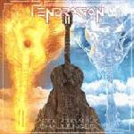

| Artist: | Pendragon |
| Title: | Acoustically Challenged |
| Label: | Metal Mind Records PROG CD 0085 DG |
| Length(s): | 58 minutes |
| Year(s) of release: | 2002 |
| Month of review: | [06/2002] |
| 1) | And We'll Go Hunting Deer | 5.33 |
| 2) | Fallen Dreams And Angels | 5.30 |
| 3) | A Man Of Nomadic Traits | 6.20 |
| 4) | World's End | 5.48 |
| 5) | The Voyager | 9.06 |
| 6) | Alaska | 8.38 |
| 7) | The Pursuit Of Excellence | 2.23 |
| 8) | 2 AM | 4.19 |
| 9) | Dark Summer's Day | 5.52 |
| 10) | Unspoken Words | 4.45 |
Fallen Dreams And Angels was a song recorde originally for the SI Music label, but it is not a song often heard. To me it seems to be one of the weaker songs Pendragon made, being a bit too mellow and overmelodious for my tastes.
The inclusion of A Man Of Nomadic Traits shows that this recording is in fact a recent one, since it hails from Pendragon most recent album. It comes out quite well: the song has this typical element, that takes a listener along on a journey of some kind. On the other hand, one does at times miss the emotional guitar outburst that are so important within Pendragon. However, the song does still easily stand up after leaving this much out. Compared to the predecessor this is a much more varied and involved track and includes some real keyboard work
World's End has somber vocals, not surprising with such a title, and fluting keyboards. Later the song gets more tempo and Nolan sings some dramatic backing vocals. If you think Barrett has his tear in his voice, Nolan seems to want to burst into tears when he is singing.
Like Barrett explains on the album, The Voyager is something like an anthem for the band. The longest song on the albu, it is still three minutes shorter than in the original version. It opens with some piano, after which we get a strong vocal melody. The emotional side of the song comes over, but again I feel the lack of the power of the electric guitar solo.
One of my favourite Pendragon songs is Alaska. It is an older song hailing from the first full studio album The Jewel. Still a beautiful song with some great melodies and an emotionally sung chorus. But it is still a toned down version. The Pursuit Of Excellence is a bit of a singalong track, which is not up to par with the rest. Fortunately it is rather short, and with all these rather depressing songs, another one coming up, it may be good to have a bit of optimism once in a while. 2 AM is high on my list of favourite songs ever and never fails to give me goosebumps. It is not different in this version.
Somber and dramatic we continue with Dark Summer's Day. The nylon string guitar strums, some Spanish guitar interjections, the song is helped along by means of Nolan's piano playing. Closer Unspoken Words is a Peter Gee track, and to be honest: one does not notice. A calm piece, with some jerky playing in the middle and string synths at the end.